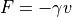

simulation.PyGranSim.dem¶
Python interface for running DEM engines
Created on April 25, 2016
Author: Andrew Abi-Mansour
This is the:
██████╗ ██╗ ██╗ ██████╗ ██████╗ █████╗ ███╗ ██╗
██╔══██╗╚██╗ ██╔╝██╔════╝ ██╔══██╗██╔══██╗████╗ ██║
██████╔╝ ╚████╔╝ ██║ ███╗██████╔╝███████║██╔██╗ ██║
██╔═══╝ ╚██╔╝ ██║ ██║██╔══██╗██╔══██║██║╚██╗██║
██║ ██║ ╚██████╔╝██║ ██║██║ ██║██║ ╚████║
╚═╝ ╚═╝ ╚═════╝ ╚═╝ ╚═╝╚═╝ ╚═╝╚═╝ ╚═══╝
DEM simulation and analysis toolkit http://www.pygran.org, support@pygran.org
Core developer and main author: Andrew Abi-Mansour, andrew.abi.mansour@pygran.org
PyGran is open-source, distributed under the terms of the GNU Public License, version 2 or later. It is distributed in the hope that it will be useful, but WITHOUT ANY WARRANTY; without even the implied warranty of MERCHANTABILITY or FITNESS FOR A PARTICULAR PURPOSE. You should have received a copy of the GNU General Public License along with PyGran. If not, see http://www.gnu.org/licenses . See also top-level README and LICENSE files.
Classes
|
A generic class that handles communication for a DEM object in a way that is independent of the engine used |
-
class
simulation.PyGranSim.dem.DEM(**pargs)[source]¶ Bases:
objectA generic class that handles communication for a DEM object in a way that is independent of the engine used
Upon instantiation, this object initializes an MPI communicator and partitions proccesors based on user input
- Parameters
model (model) – contact mechanical model (default SpringDashpot)
Todo
Provide a description of each arg in pargs
-
velocity(*args)[source]¶ Assigns velocity to selected particles.
- Parameters
args (tuple) – group-ID style args keyword value
- Note
See link for info on keywords and their associated values.
-
addViscous(**args)[source]¶ Adds a viscous damping force
 proportional
to each particle’s velocity
proportional
to each particle’s velocity  :
:
- Parameters
species (int) – species index (0, 1, …)
gamma (positive float) – viscosity coefficient (
 )
)scale (tuple) – (species, ratio) tuple to scale gamma with
-
createProperty(name, *args)[source]¶ Internal function used to create material and interaction properties
-
importMeshes(name=None)[source]¶ An internal function that is called during DEM initialization for importing meshes. Unless name is supplied, this function by default imports all meshes and sets them up as walls.
- Parameters
name (str) – mesh name
- Note
Can import only one mesh specified by the name keyword.
-
importMesh(name, file, mtype, **args)[source]¶ Imports a mesh file (STL or VTK)
- Parameters
name (str) – define mesh name
file (str) – mesh file pathname
mtype (str) – mesh type (mesh/surface, mesh/surface/stress/deform, etc.)
args (dict) – mesh_keywords
- Note
see link for further info on mtype and args.
-
setupWall(wtype, species=None, plane=None, peq=None)[source]¶ Creates a primitive (virtual) or surface (mesh) wall
- Parameters
wtype (string) – type of the wall (primitive or mesh)
species (int) – species type or primitive (virtual) walls
plane (string) – x, y, or z plane for primitive (virtual) walls
peq (float) – plane equation for primitive (virtual) walls
- Returns
wall name
- Return type
string
- Example
primitiveWall = setupWall(species=1, wtype=’primitive’, plane = ‘zplane’, peq = 0.0)
-
printSetup()[source]¶ Updates the print setup used to set which variables to write to file, and their format.
-
writeSetup(only_mesh=False, name=None)[source]¶ This creates dump files for particles and meshes in the system. In LIGGGHTS, all meshes must be declared once, so if a mesh is removed during the simulation, this function has to be called again, usually with only_mesh=True to keep the particle dump intact.
- Parameters
only_mesh (bool) – controls if the particle dump is updated
name (str) – name of the particle dump
- Returns
mesh dump ID(s)
- Return type
str or list(str)
-
setupIntegrate(itype='nve/sphere', group='all')[source]¶ Controls how Newton’s eqs are integrated in time.
- Parameters
itype (str) – integrator type (‘nve/sphere’ or ‘multisphere’)
group (str) – particle group ID to apply the integration for
-
integrate(steps, dt)[source]¶ Advance system in time.
- Parameters
steps (int) – number of steps
dt (float) – timestep
-
remove(name)[source]¶ Delete variable/object by name.
- Parameters
name (str) – name of variable/object to unfix